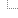

 Manual de reparación de la carrocería
 0. AVISO DE SERVICIO 1. INFORMACIÓN GENERAL 2. PREPARATIVOS PARA LAS REPARACIONES DE LA CARROCERÍA 3. SOLDADURA Y HERRAMIENTAS 4. PARTE DELANTERA 5. TECHO, PANEL TRASERO Y PANEL DEL PISO TRASERO 6. VANO DE PUERTAS DEL BASTIDOR, PUERTA Y PARTE EXTERIOR DEL PANEL LATERAL 7. GUARDABARROS, CAPÓ, PORTÓN TRASERO Y PUERTA DEL MALETERO 8. DIMENSIONES DE LA CARROCERÍA 9. SELLADO, CALAFATEADO E INSONORIZACIÓN 10. TRATAMIENTO ANTICORROSIVO
0. AVISO DE SERVICIO 1. INFORMACIÓN GENERAL 2. PREPARATIVOS PARA LAS REPARACIONES DE LA CARROCERÍA 3. SOLDADURA Y HERRAMIENTAS 4. PARTE DELANTERA 5. TECHO, PANEL TRASERO Y PANEL DEL PISO TRASERO 6. VANO DE PUERTAS DEL BASTIDOR, PUERTA Y PARTE EXTERIOR DEL PANEL LATERAL 7. GUARDABARROS, CAPÓ, PORTÓN TRASERO Y PUERTA DEL MALETERO 8. DIMENSIONES DE LA CARROCERÍA 9. SELLADO, CALAFATEADO E INSONORIZACIÓN 10. TRATAMIENTO ANTICORROSIVO Diagrama eléctrico de las conexiones
LHD
1. CÓMO ENTENDER UN DIAGRAMA DE CABLEADO ELÉCTRICO 2. POSICIÓN DE CONECTORES Y TOMAS DE TIERRA 3. DIAGRAMA DE CABLEADO DE ALIMENTACIÓN DE TENSIÓN 4. UTILIZACIÓN Y CAPACIDAD DE LOS FUSIBLES DEL BLOQUE DE FUSIBLES 5. DIAGRAMAS DE CABLEADO ELÉCTRICO
1. SISTEMA DE ARRANQUE Y CARGA 2. ECM (MÓDULO DE CONTROL DEL MOTOR): MR: 140 3. ECM (MÓDULO DE CONTROL DEL MOTOR): HV: 240 4. ECM (ENGINE CONTROL MODULE): SIRIUS D42R 5. ECM (MÓDULO DE CONTROL DEL MOTOR): MT80 6. TCM (MÓDULO DE CONTROL ELECTRÓNICO DE LA TRANSMISIÓN) 7. AIRE ACONDICIONADO 8. FATC (CIRCUITO DEL CONTROL DE LA TEMPERATURA DEL HABITÁCULO TOTALMENTE AUTOMÁTICO) 9. CIRCUITO DE VENTILADOR DE REFRIGERACIÓN DEL RADIADOR 10. CIRCUITO DE LOS FAROS Y DISPOSITIVO DE REGLAJE DE LOS FAROS (HLLD) 11. CIRCUITO DE DRL (LUCES DE CIRCULACIÓN DIURNA) 12. CIRCUITO DE ALUMBRADO 13. CIRCUITO DE LAS LUCES ANTINIEBLA TRASERAS Y DELANTERAS 14. CIRCUITO DE LUCES DE EMERGENCIA E INTERMITENTES 15. CIRCUITO DE LAS LUCES DE FRENO, LUZ DE FRENO DE FIJACIÓN CENTRAL SUPERIOR (CHMSL) Y LUCES DE MARCHA ATRÁS 16. CIRCUITO DE CLAXON, TOMA DE CORRIENTE, LUZ DEL CENICERO Y ENCENDEDOR DE CIGARRILLOS 17. CIRCUITO DE LUCES (HABITÁCULO, AVISO DE APERTURA DE PUERTAS) 18. CIRCUITO DEL AVISADOR ACÚSTICO, CINTURÓN DE SEGURIDAD E INTERRUPTOR DEL RECORDATORIO DE LA LLAVE DE CONTACTO 19. CIRCUITO DEL LIMPIAPARABRISAS 20. CIRCUITO DEL ANTIVAHO DE LA LUNETA TRASERA Y SISTEMA DE CALEFACCIÓN DE LOS RETROVISORES EXTERIORES 21. CIRCUITO DE RETROVISORES EXTERIORES ELÉCTRICOS 22. CIRCUITO DE ELEVALUNAS ELÉCTRICO 23. CIRCUITO DEL SISTEMA DE CIERRE CENTRALIZADO DE LAS PUERTAS 24. CUADRO 25. RELOJ 26. CIRCUITO DEL EQUIPO DE SONIDO 27. SISTEMA ANTIBLOQUEO DE FRENOS (ABS) 28. AIRBAG (SDM: MÓDULO DE DETECCIÓN Y DIAGNÓSTICO) 29. CIRCUITO DEL TECHO CORREDIZO 30. CIRCUITO DEL SISTEMA INMOVILIZADOR 31. CIRCUITO DEL SISTEMA DE CONTROL ANTIRROBO 32. CIRCUITO DEL ECONOMIZADOR DE BATERÍA RHD
1. CÓMO ENTENDER UN DIAGRAMA DE CABLEADO ELÉCTRICO 2. POSICIÓN DE CONECTORES Y TOMAS DE TIERRA 3. DIAGRAMA DE CABLEADO DE ALIMENTACIÓN DE TENSIÓN 4. UTILIZACIÓN Y CAPACIDAD DE LOS FUSIBLES DEL BLOQUE DE FUSIBLES 5. DIAGRAMAS DE CABLEADO ELÉCTRICO
1. SISTEMA DE ARRANQUE Y CARGA 2. ECM (MÓDULO DE CONTROL DEL MOTOR): MR: 140 3. ECM (MÓDULO DE CONTROL DEL MOTOR): HV: 240 4. ECM (ENGINE CONTROL MODULE): SIRIUS D42R 5. ECM (MÓDULO DE CONTROL DEL MOTOR): MT80 6. TCM (MÓDULO DE CONTROL ELECTRÓNICO DE LA TRANSMISIÓN) 7. AIRE ACONDICIONADO 8. FATC (CIRCUITO DEL CONTROL DE LA TEMPERATURA DEL HABITÁCULO TOTALMENTE AUTOMÁTICO) 9. CIRCUITO DE VENTILADOR DE REFRIGERACIÓN DEL RADIADOR 10. CIRCUITO DE LOS FAROS Y DISPOSITIVO DE REGLAJE DE LOS FAROS (HLLD) 11. CIRCUITO DE ALUMBRADO 12. CIRCUITO DE LAS LUCES ANTINIEBLA TRASERAS Y DELANTERAS 13. CIRCUITO DE LUCES DE EMERGENCIA e INTERMITENTES 14. CIRCUITO DE LAS LUCES DE FRENO, LUZ DE FRENO DE FIJACIÓN CENTRAL SUPERIOR (CHMSL) Y LUCES DE MARCHA ATRÁS 15. CIRCUITO DE CLAXON, TOMA DE CORRIENTE, LUZ DEL CENICERO Y ENCENDEDOR DE CIGARRILLOS 16. CIRCUITO DE LUCES (HABITÁCULO, AVISO DE APERTURA DE PUERTAS) 17. CIRCUITO DE AVISADOR ACÚSTICO, CINTURÓN DE SEGURIDAD E INTERRUPTOR DEL RECORDATORIO DE LA LLAVE 18. CIRCUITO DEL LIMPIAPARABRISAS 19. CIRCUITO DEL ANTIVAHO DE LA LUNETA TRASERA Y SISTEMA DE CALEFACCIÓN DE RETROVISORES EXT. 20. CIRCUITO DE RETROVISORES EXTERIORES ELÉCTRICOS 21. CIRCUITO DE ELEVALUNAS ELÉCTRICO 22. CIRCUITO DEL SISTEMA DE CIERRE CENTRALIZADO DE PUERTAS 23. CUADRO 24. RELOJ 25. CIRCUITO DEL EQUIPO DE SONIDO 26. SISTEMA ANTIBLOQUEO DE FRENOS (ABS) 27. AIRBAG (SDM: MÓDULO DE DETECCIÓN Y DIAGNÓSTICO) 28. CIRCUITO DEL TECHO CORREDIZO 29. CIRCUITO DEL SISTEMA INMOVILIZADOR 30. CIRCUITO DEL SISTEMA DE CONTROL ANTIRROBO 31. CIRCUITO DEL ECONOMIZADOR DE BATERÍA Guía de duración de la mano de obra
0. Información general1. Motor
MOTOR DE GASOLINA (MECÁNICA DEL MOTOR SOHC) MOTOR DIESEL (MECÁNICA DEL MOTOR SOHC) MOTOR (MECÁNICA DEL MOTOR DOHC) MOTOR (REFRIGERACIÓN DEL MOTOR DE GASOLINA) MOTOR (REFRIGERACIÓN DEL MOTOR DIESEL) MOTOR (SISTEMA ELÉCTRICO DEL MOTOR DE GASOLINA) MOTOR (SISTEMA ELÉCTRICO DEL MOTOR DIESEL) MOTOR (CONTROLES DEL MOTOR DE GASOLINA) MOTOR (CONTROLES DEL MOTOR DIESEL) MOTOR (ADMISIÓN Y ESCAPE DEL MOTOR DE GASOLINA) MOTOR (ADMISIÓN Y ESCAPE DEL MOTOR DE ESCAPE) 2. Suspensión
SUSPENSIÓN (SUSPENSIÓN DELANTERA) SUSPENSIÓN (SUSPENSIÓN TRASERA) SUSPENSIÓN (NEUMÁTICOS Y LLANTA) 3. Línea de propulsión / eje4. Frenos
FRENO HIDRÁULICO – TUBO DE FRENO (425) FRENO HIDRÁULICO - PEDAL DE FRENO Y FIJACIÓN (428) CILINDRO MAESTRO Y SERVOFRENO - CILINDRO MAESTRO Y SERVO (431) FRENOS DELANTEROS - FRENO DELANTERO (445) FRENOS TRASEROS - FRENO TRASERO (456) SISTEMA DE FRENOS ANTIBLOQUEO - SISTEMA DE FRENOS ANTIBLOQUEO (462) FRENOS DE ESTACIONAMIENTO - FRENO DE ESTACIONAMIENTO (478) 5. Transmisiones/transeje
TRANSMISIÓN / TRANSEJE (TRANSEJE AUTOMÁTICO ZF 16HP) TRANSMISIÓN / TRANSEJE (TRANSEJE AUTO AISIN: 81-40 / 80-40LE) TRANSMISIÓN / TRANSEJE (TRANSEJE AUTO AISIN: 55-51LE) TRANSMISIÓN / TRANSEJE (TRANSEJE AUTO GMPT: 6T40/45) TRANSMISIÓN / TRANSEJE (TRANSEJE MANUAL DE CINCO MARCHAS D16, D20) TRANSMISIÓN / TRANSEJE (TRANSEJE MANUAL DE CINCO MARCHAS: Y4M/Y4M-HD) TRANSMISIÓN / TRANSEJE (TRANSEJE MANUAL DE CINCO MARCHAS D24, D33) TRANSMISIÓN / TRANSEJE (EMBRAGUE) 6. Dirección
DIRECCIÓN (SISTEMA DE LA DIRECCIÓN ASISTIDA) DIRECCIÓN (MECANISMO DE DIRECCIÓN MANUAL) DIRECCIÓN (VOLANTE Y COLUMNA DE LA DIRECCIÓN) 7. HVAC (calefacción, ventilación y aire acondicionado)
CALEFACCIÓN Y VENTILACIÓN CONTROL DEL HVAC 8. Restricciones
RETENCIONES (CINTURONES DE SEGURIDAD) RETENCIONES S.I.R. (SISTEMA DE RETENCIÓN SUPLEMENTARIA) 9. Carrocería y accesorios
CARROCERÍA & ACCESORIOS (SISTEMA DE CABLEADO DE CARROCERÍA) CARROCERÍA & ACCESORIOS (SISTEMA DE ILUMINACIÓN) CARROCERÍA & ACCESORIOS (SISTEMA DE LAVADO/LIMPIAPARABRISAS) CARROCERÍA &ACCESORIOS (SISTEMA DE CONDUCTOR DE INSTRUMENTOS) CARROCERÍA & ACCESORIOS (AUDIO & SISTEMA ANTIRROBO) CARROCERÍA &ACCESORIOS (TAPIZADO INTERIOR) CARROCERÍA & ACCESORIOS (ASIENTOS) CARROCERÍA &ACCESORIOS (CRISTALES & ESPEJOS) CARROCERÍA & ACCESORIOS (PARTES EXTERIORES) CARROCERÍA &ACCESORIOS (PARACHOQUES & FACIAS) CARROCERÍA &ACCESORIOS (PUERTAS) CARROCERÍA & ACCESORIOS (TECHO) CARROCERÍA & ACCESORIOS (EXTREMO DELANTERO DE LA CARROCERÍA) CARROCERÍA & ACCESORIOS (EXTREMO TRASERO DE LA CARROCERÍA) 10. Pintura
10 Pintura 10 Pintura exterior Inspección de pre-entrega
PREFACIO INTRODUCCIÓN GENERAL COMPARTIMENTO MOTOR CARROCERÍA ACCESORIOS DEBAJO DEL VEHÍCULO PRUEBA EN CARRETERA ASPECTO ANEXO Manual de servicio
0. Información general1. Motor
INFORMACIÓN GENERAL SOBRE EL MOTOR MECÁNICA DEL MOTOR: 1,2L DOHC
ESPECIFICACIONES HERRAMIENTAS ESPECIALES DIAGNÓSTICO LOCALIZACION DE COMPONENTES MANTENIMIENTO Y REPARACIÓN
SERVICIO EN VEHÍCULO Culata y junta Cárter de aceite Bomba de aceite Bancada de motor Fijación del soporte del REPARACIÓN DE LA UNIDAD DESCRIPCIÓN GENERAL Y FUNCIONAMIENTO DEL SISTEMA MECÁNICA DEL MOTOR: 1,4 DOHC - G14D
ESPECIFICACIONES HERRAMIENTAS ESPECIALES DIAGNÓSTICO LOCALIZACION DE COMPONENTES MANTENIMIENTO Y REPARACIÓN
SERVICIO EN VEHÍCULO Sistema de distribución Piñón del árbol de levas Ajustador del árbol de levas Junta de estanqueidad del árbol de levas Árbol de levas serie de válvulas : Culata instalada: Holgura de la válvula Culata y junta Indicador de aceite y tubo Cambio del aceite del motor y del filtro del aceite Refrigerador de aceite Cárter de aceite Válvula de descarga de presión del aceite Válvula de descarga de sobrepresión del aceite Bomba de aceite Volante motor - sólo caja de cambios manual: Placa de acoplamiento flexible - Sólo caja de cambios automática: Arandela de aceite delantera del cigüeñal Arandela de aceite trasera del cigüeñal Bancada de motor Barra de reacción Fijación del soporte del REPARACIÓN DE LA UNIDAD
Culata Árbol de levas serie de válvulas Pistón / Aro / Biela Cigüeñal DESCRIPCIÓN GENERAL Y FUNCIONAMIENTO DEL SISTEMA REFRIGERACIÓN DEL MOTOR SISTEMA ELÉCTRICO DEL MOTOR
ESPECIFICACIONES DIAGRAMAS DE ESQUEMAS Y DIRECCIONES LOCALIZACION DE COMPONENTES DIAGNÓSTICO MANTENIMIENTO Y REPARACIÓN DESCRIPCIÓN GENERAL Y FUNCIONAMIENTO DEL SISTEMA CONTROLES DEL MOTOR - 1,2L DOHC
ESPECIFICACIONES HERRAMIENTAS ESPECIALES DIAGRAMAS DE ESQUEMAS Y DIRECCIONES LOCALIZACION DE COMPONENTES DIAGNÓSTICO
DIAGNÓSTICO DEL SISTEMA Asistencia en el diagnóstico Procedimiento de programación de aire TEC - CORRECCIÓN DE ERROR DE DIENTE - Procedimiento de programación Comprobación del sistema de diagnóstico de a bordo - 1,2L DOHC: Activación de DTCs múltiples de los sensores de información del ECM El motor gira pero no arranca - 1,2L DOHC: No se enciende la luz indicadora de fallo de funcionamiento - 1,2L DOHC: Luz indicadora de fallo de funcionamiento encendida de forma estable - 1,2L DOHC: Diagnóstico del sistema de combustible - 1,2L DOHC: Comprobación del circuito del relé de la bomba de combustible - 1,2L DOHC: Comprobación del circuito del relé principal - 1,2L DOHC: Comprobación de la presión absoluta del colector - 1,2L DOHC: Comprobación del sistema de control del aire de ralentí - 1,2L DOHC: Comprobación del sistema de encendido - 1,2L DOHC: Comprobación del circuito de los ventiladores de refrigeración del motor - 1,2L DOHC: Diagnóstico del conector de diagnóstico - 1,2L DOHC: Prueba de bobina de inyector de combustible Prueba de equilbrio de inyector de combustible DIAGNÓSTICO POR CÓDIGOS DE AVERÍA - 1,2L DOHC:
Borrar los códigos de avería Códigos de diagnóstico de averías - 1,2L DOHC: DTC P0031 DTC P0032 DTC P0037 DTC P0038 DTC P0107 - Baja tensión del sensor de presión absoluta del colector de admisión DTC P0108 - Alta tensión del sensor de presión absoluta del colector de admisión DTC P0112 DTC P0113 DTC P0117 DTC P0118 DTC P0122 DTC P0123 DTC P0131 - Baja tensión de HO2S (Sensor 1) DTC P0137 - Baja tensión de HO2S (Sensor 2) DTC P0132 - Alta tensión de HO2S (Sensor 1) DTC P0138 - Alta tensión de HO2S (Sensor 2) DTC P0133 DTC P0139 DTC P0140 DTC P0171 DTC P0172 DTC P0261 - Baja tensión del inyector 1 DTC P0264 - Baja tensión del inyector 2 DTC P0267 - Baja tensión del inyector 3 DTC P0270 - Baja tensión del inyector 4 DTC P0262 - Alta tensión del inyector 1 DTC P0265 - Alta tensión del inyector 2 DTC P0268 - Alta tensión del inyector 3 DTC P0271 - Alta tensión del inyector 4 DTC P0300 DTC P0301 DTC P0302 DTC P0303 DTC P0304 DTC P0327 DTC P0335 DTC P0336 DTC P0337 DTC P0341 DTC P0342 DTC P0351 - Fallo de los circuitos 1 y 4 de control de encendido DTC P0352 - Fallo de los circuitos 2 y 3 de control de encendido DTC P0400 - Recirculación de gases de escape fuera del límite DTC P0401 - Recirculación de gases de escape bloqueada DTC P0402 - Recirculación de gases de escape con fugas DTC P0403 DTC P0404 DTC P0405 DTC P0406 DTC P0420 DTC P0444 - No hay señal del circuito de control de purga EVAP DTC P0445 - Fallo en el circuito de control de purga EVAP DTC P0462 DTC P0463 DTC P0480 - Fallo del circuito del relé de baja velocidad de los ventiladores de refrigeración DTC P0481 - Fallo del circuito del relé de alta velocidad de los ventiladores de refrigeración DTC P0501 DTC P0505 DTC P0532 DTC P0533 DTC P0537 - Baja tensión del sensor de temperatura del evaporador DTC P0538 - Alta tensión del sensor de temperatura del evaporador DTC P0562 DTC P0563 DTC P0601- Error de checksum del módulo de control electrónico del motor DTC P0604 - Error de la RAM del módulo de control electrónico del motor DTC P0605 - Error de escritura del módulo de control electrónico del motor DTC P0628 DTC P0629 DTC P0646 DTC P0647 DTC P0650 DTC P0656 DTC P0661 DTC P0662 DTC P1321 - Error de dentado del período del segmento del cigüeñal DTC P1390 DTC P1396 DTC P1610 DTC P1611 DTC P1628 DTC P1629 DTC P1650 DIAGNÓSTICO DE SÍNTOMAS MANTENIMIENTO Y REPARACIÓN DESCRIPCIÓN GENERAL Y FUNCIONAMIENTO DEL SISTEMA CONTROLES DEL MOTOR - 1,4 DOHC - G14D
ESPECIFICACIONES HERRAMIENTAS ESPECIALES DIAGRAMAS DE ESQUEMAS Y DIRECCIONES DIAGNÓSTICO
DIAGNÓSTICO DEL SISTEMA Comprobación del sistema de diagnóstico Síntomas - controles del motor Fallos intermitentes Arranque difícil Aumentos y reducciones espontáneos de potencia y velocidad Falta de potencia, lentitud, o esponjosidad Detonación/picado Oscilación, curvatura, caída Cortes, pérdidas Economía de combustible pobre Ralentí irregular, inestable o incorrecto, calado Explosiones al carburador Autoencendido, funcionamiento continuado Luz indicadora de fallo de funcionamiento (MIL) no operativa Luz indicadora de fallo de funcionamiento (MIL) siempre activada El motor gira pero no arranca Diagnóstico del circuito eléctrico de la bomba de combustible Diagnóstico del sistema de combustible Prueba de bobina de solenoide de inyector de combustible Prueba de equilbrio de inyector de combustible Diagnóstico de alcohol/contaminantes en combustible Diagnóstico del sistema de encendido electrónico (EI) El scanner no se enciende El scanner no se comunica con dispositivo GMLAN Programación y configuración del módulo de control del motor - Motor de gasolina G14D/G16D con Controlador MT80: Procedimiento de memorización del ralentí Posición del cigüeñal (CKP) - Memorización de vaciación del sistema o TEC: Corrección del error de diente: Procedimiento de memorización DIAGNÓSTICO DE CÓDIGOS DE AVERÍA
Definiciones de tipos de DTC - Motor G14D: Borrar los códigos de avería Códigos de avería de diagnóstico DTC P0011, P0012, P0014, P0015, P0026, P0027 DTC P0016, P0017 DTC P0068 DTC P0076, P0077, P0079, P0080 DTC P0106 DTC P0107, P0108 DTC P0112, P0113 DTC P0117, P0118 DTC P0122, P0123, P0222, P0223, P2135 DTC P0125 DTC P0131, P0132, P0134, P0137, P0138, P0140 DTC P0133 DTC P0135, P0141 DTC P0171, P0172 DTC P0230 DTC P0261, P0262, P0264, P0265, P0267, P0268, P0270, P0271 DTC P0300, P0301, P0302, P0303, P0304 DTC P0315 DTC P0317, P1396, P1397 - Con ABS: DTC P0317, P1396, P1397 - Sin ABS: DTC P0324 DTC P0325 DTC P0335, P0336 DTC P0340, P0341, P0366 DTC P0351, P0352, P0353, P0354 DTC P0420 DTC P0452, P0453 DTC P0458, P0459 DTC P0461, P0462, P0463 DTC P0480, P0481 DTC P0502 - Sólo caja de cambios automática DTC P0502 - Sólo caja de cambios manual DTC P0506, P0507 DTC P0532, P0533 DTC P0562, P0563 DTC P0571 DTC P0598, P0599 DTC P0601, P0602, P0606, P0607, P060A, P060C, P060D, P2610 DTC P061A DTC P0641, P0651 DTC P0646, P0647 DTC P0650 DTC P0685 DTC P0700 DTC P1137, P1166 DTC P1138, P2297 DTC P2101, P2119 DTC P2104, P2105, P2106, P2110 DTC P2122, P2123, P2127, P2128, P2138 DTC P2184, P2185 DTC U0073 MANTENIMIENTO Y REPARACIÓN DESCRIPCIÓN GENERAL Y FUNCIONAMIENTO DEL SISTEMA ESCAPE DEL MOTOR 2. Suspensión
DIAGNÓSTICO DE LA SUSPENSIÓN ALINEACIÓN DE RUEDAS SUSPENSIÓN DELANTERA SUSPENSIÓN TRASERA NEUMÁTICOS Y RUEDAS 3. Línea de propulsión / eje
EJE DE DIRECCIÓN DEL TRANSEJE AUTOMÁTICO EJE DE DIRECCIÓN DEL TRANSEJE MANUAL 4. Frenos
FRENOS HIDRÁULICOS CILINDRO MAESTRO SERVOFRENO FRENOS DE DISCO DELANTEROS FRENOS DE TAMBOR TRASEROS SISTEMA ANTIBLOQUEO DE FRENOS
ESPECIFICACIONES HERRAMIENTAS ESPECIALES DIAGRAMAS DE ESQUEMAS Y DIRECCIONES LOCALIZACION DE COMPONENTES DIAGNÓSTICO
Comprobación para el diagnóstico del circuito Lámpara indicadora del ABS no operativa Alimentación de tensión al módulo de control, no hay DTCs almacenados Lámpara indicadora del ABS iluminada continuamente, no hay DTCs guardados Autodiagnóstico Visualización de los DTCs Cómo borrar los DTCs Conexiones intermitentes y defectuosas DTC C0035 DTC C0036 DTC C0040 DTC C0041 DTC C0045 DTC C0046 DTC C0050 DTC C0051 DTC C0060/C0065 DTC C0070/C0075 DTC C0080/C0085 DTC C0090/C0095 DTC C0110 DTC C0121 DTC C0161 DTC C0550 DTC C0800 DTC C1395 MANTENIMIENTO Y REPARACIÓN DESCRIPCIÓN GENERAL Y FUNCIONAMIENTO DEL SISTEMA FRENO DE ESTACIONAMIENTO 5. Transmisiones/transeje
CAJA DE CAMBIOS AUTOMÁTICA AISIN
ESPECIFICACIONES HERRAMIENTAS ESPECIALES DIAGRAMAS ESQUEMÁTICOS LOCALIZACION DE COMPONENTES DIAGNÓSTICO DIAGNÓSTICO DE CÓDIGOS DE AVERÍAS
Tablas de códigos de diagnóstico de averías DTC P0562 DTC P0563 DTC P0601 DTC P0604 DTC P0705 DTC P0706 DTC P0711 DTC P0712 DTC P0713 DTC P0717 DTC P0722 DTC P0741 DTC P0742 DTC P0751 DTC P0752 DTC P0756 DTC P0757 DTC P0787 DTC P0788 DTC P0962 DTC P0963 DTC P0973 DTC P0974 DTC P0976 DTC P0977 DTC P2769 DTC P2770 DTC U0001 DTC U0100 DTC U0401 MANTENIMIENTO Y REPARACIÓN REPARACIÓN DE LA UNIDAD
Desmontaje de los componentes principales Montaje de los componentes principales Bomba de aceite Embrague de directa Corona de planetario Embrague unidireccional Embrague de avance y marcha atrás Engranaje conducido de la transmisión intermedia Cuerpo de válvula Carcasa del diferencial DESCRIPCIÓN GENERAL Y FUNCIONAMIENTO DEL SISTEMA CAJA DE CAMBIOS MANUAL DE CINCO VELOCIDADES - D16:
ESPECIFICACIONES HERRAMIENTAS ESPECIALES DIAGNÓSTICO LOCALIZADORES DE COMPONENTES MANTENIMIENTO Y REPARACIÓN REPARACIÓN DE LA UNIDAD
Desmontaje de los componentes principales Eje primario y conjunto de engranajes Eje principal Alojamiento de caja Diferencial Montaje de los componentes principales DESCRIPCIÓN GENERAL Y FUNCIONAMIENTO DEL SISTEMA CAJA DE CAMBIOS MANUAL DE CINCO VELOCIDADES - Y4M HD:
ESPECIFICACIONES HERRAMIENTAS ESPECIALES DIAGNÓSTICO LOCALIZADORES DE COMPONENTES MANTENIMIENTO Y REPARACIÓN DESCRIPCIÓN GENERAL Y FUNCIONAMIENTO DEL SISTEMA EMBRAGUE - TIPO HIDRÁULICO: EMBRAGUE - TIPO CABLE: 6. Dirección
SISTEMA DE DIRECCIÓN ASISTIDA BOMBA DE LA DIRECCIÓN ASISTIDA ENGRANAJE DE SERVODIRECCIÓN ENGRANAJE DE DIRECCIÓN MANUAL VOLANTE Y COLUMNA DE LA DIRECCIÓN 7. HVAC (calefacción, ventilación y aire acondicionado)
SISTEMA DE CALEFACCIÓN Y VENTILACIÓN SISTEMA DE CALEFACCIÓN, VENTILACIÓN Y AIRE ACONDICIONADO DE CONTROL MANUAL
ESPECIFICACIONES HERRAMIENTAS ESPECIALES DIAGRAMAS DE ESQUEMAS Y DIRECCIONES DIAGNÓSTICO LOCALIZACION DE COMPONENTES MANTENIMIENTO Y REPARACIÓN REPARACIÓN DE LA UNIDAD DESCRIPCIÓN GENERAL Y FUNCIONAMIENTO DEL SISTEMA SISTEMA DE CONTROL DE TEMPERATURA AUTOMÁTICO DE CALEFACCIÓN, VENTILACIÓN Y AIRE ACONDICIONADO
ESPECIFICACIONES DIAGRAMAS DE ESQUEMAS Y DIRECCIONES DIAGNÓSTICO MANTENIMIENTO Y REPARACIÓN DESCRIPCIÓN GENERAL Y FUNCIONAMIENTO DEL SISTEMA 8. Restricciones
CINTURONES DE SEGURIDAD MECANISMO DE RETENCIÓN SUPLEMENTARIA - SIR:
ESPECIFICACIONES HERRAMIENTAS ESPECIALES DIAGRAMAS DE ESQUEMAS Y DIRECCIONES DIAGNÓSTICO
DTC Diagnóstico de herramientas de exploración Comprobación del sistema de diagnóstico SIR Comprobación integral del módulo de diagnóstico y detección (SDM) DTC B1101 DTC B1102 DTC B1103 DTC B1346 DTC B1347 DTC B1348 DTC B1349 DTC B1352 DTC B1353 DTC B1354 DTC B1355 DTC B1361 DTC B1362 DTC B1363 DTC B1364 DTC B1367 DTC B1368 DTC B1369 DTC B1370 DTC B1378 DTC B1379 DTC B1380 DTC B1381 DTC B1382 DTC B1383 DTC B1384 DTC B1385 DTC B1395 DTC B1400 DTC B1401 DTC B1402 DTC B1403 DTC B1404 DTC B1405 DTC B1409 DTC B1410 DTC B1414 DTC B1415 DTC B1451 DTC B1453 DTC B1620 DTC B1650 DTC B1651 DTC B1652 DTC B1657 DTC B2500 DTC B2502 MANTENIMIENTO Y REPARACIÓN DESCRIPCIÓN GENERAL Y FUNCIONAMIENTO DEL SISTEMA 9. Carrocería y accesorios
SISTEMA DE CABLEADO DE LA CARROCERÍA SISTEMAS DE ALUMBRADO
ESPECIFICACIONES DIAGRAMAS DE ESQUEMAS Y DIRECCIONES DIAGNÓSTICO DESCRIPCIÓN GENERAL Y FUNCIONAMIENTO DEL SISTEMA CLAXON SISTEMAS LIMPIA/LAVAPARABRISAS INSTRUMENTACIÓN/INFORMACIÓN PARA EL CONDUCTOR
ESPECIFICACIONES DIAGRAMAS DE ESQUEMAS Y DIRECCIONES DIAGNÓSTICO MANTENIMIENTO Y REPARACIÓN DESCRIPCIÓN GENERAL Y FUNCIONAMIENTO DEL SISTEMA EQUIPO DE SONIDO GUARNECIDO INTERIOR ASIENTOS INFILTRACIONES DE AGUA RUIDO DEL VIENTO CHIRRIDOS Y TABLETEO LUNAS Y ESPEJOS GUARNECIDO EXTERIOR BASTIDOR Y BAJOS DE LA CARROCERÍA PARACHOQUES Y TABLEROS PUERTAS TECHO PARTE DELANTERA DE LA CARROCERÍA PARTE TRASERA DE LA CARROCERÍA MANDO A DISTANCIA DE LAS PUERTAS Y SISTEMA ANTIRROBO INMOVILIZADOR ANTIRROBO